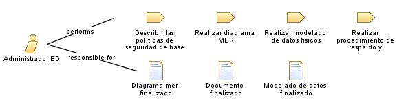

|
| El Administrador de Base de Datos es un rol clave en proyectos de software que se enfoca en la gestión y administración de las bases de datos utilizadas por una aplicación o sistema. |
| Synonyms: Administrador de Sistemas de Base de Datos, Administrador de Bases de Datos, Especialista en Base de Datos. |
|
Relationships
 |
| Primary Performs |
|
| Modifies |
|
Main Description
El rol del Administrador de Bases de Datos es fundamental en el ámbito de los proyectos de software y sistemas de
información. El Administrador de Bases de Datos es responsable de la gestión y administración de las bases de datos
utilizadas por una organización, asegurando su correcto funcionamiento, rendimiento, seguridad y disponibilidad.
La tarea principal del Administrador de Bases de Datos es diseñar, implementar y mantener las bases de datos de acuerdo con
las necesidades del proyecto o sistema. Esto implica realizar actividades como el diseño lógico y físico de la base de
datos, la creación de esquemas y tablas, la definición de índices y restricciones, y la optimización del rendimiento de las
consultas y transacciones. |
Staffing
| Skills | Tecnicas especializadas en el manejo de BD, Conocimientos solidos, Lenguaje apropiado, Modelado de datos, Optimizacion
de consultas. |
| Assignment Approaches | el enfoque principal del Administrador de Base de Datos es trabajar estrechamente con el equipo de desarrollo de software,
el arquitecto de software y los analistas para comprender los requisitos y traducirlos en una estructura de base de datos
adecuada |
| Synonyms | Administrador de Sistemas de Base de Datos, Administrador de Bases de Datos, Especialista en Base de Datos. |
Key Considerations
| Planfiacion y diseño, Optimizacion, Implementacion de medidas de seguridad |
|